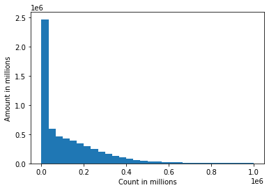

Case Study #1
The given dataset (CSV) has data containing synthetic transactions and some are marked as fraudulent. I have performed the queries required in case study 1 as follows:
• Describe the Dataset and any issues with it:
Here, we can see there are 5 different types of transactions: 1) CASH_IN 2) CASH_OUT 3) DEBIT 4) TRANSFER 5) PAYMENT.
We have a column "newbalanceOrig" which can be obtained by "oldbalanceOrg - amount"
There are 2 rows which have a difference in the newbalanceOrig by +0.01 than the expected value.
There are 5 rows which have a difference in the newbalanceOrig by -0.01 than the expected value.
16 records has been flagged as fraud by the dataset.
For type: "Transfer",
We get 297 records where Destination account had non-zero old balance and after the transfer, the balance observed is '0'.
We get 236 records for type transfer where Origin account did not have enough balance to be transferred to the destination account.
There are 318 rows where the destination balance is not updated in multiple rows while the money got deducted from the origin account. In such rows, Destination table shows amount as '0' even after a transfer transaction.
Out of 318 rows for transfer for which we had a non-zero new dest balance, 224 were wrongly calculated new destination balances after transfer and 94 were correctly calculated.
• Generate a minimum of 5 visualizations using the data and write a brief description of your
observations. Additionally, all attempts should be made to make the visualizations visually
appealing
:
Here, we can see the percentage of number of rows of the 5 different types of transactions.
Since the given data is synthetic, we are observing fraudelent transactions in two types of transactions: 1) Cash_out 2) Transfer. Here, we can see there are almost equal number of fraud transactions in both.

We can see that the distribution of amount over count is a long-tail curve. Here, we get very low count of transactions for high amount such as 1 million.
We can see that the distribution of amount over count is a long-tail curve. Here, we get very low count of transactions for high amount such as 100,000 and it proves that this is valid dataset and the distribution makes sense just like real-life records.
Above image shows the correlation between multiple fields of the given data. Here the shade of the blocks define the corelation. Light color corresponds to higher correlation and dark shade corresponds to low correlation. For example, we can see a block of light shade between oldbalanceDest and newbalanceDest which proves they are highly correlated. While on the other hand, isFlaggedFraud and isFraud are not highly correlated as we have observed multiple wrong predictions above.
• Create a feature set and perform prediction of fraudulent transactions using at least 2 algorithms. Describe any data cleansing that must be performed.:
Training and testing split is 70:30. It is split in a way that fradulent transaction ratio remains the same in both the sets. In the 70% of the training data, we further downsample it to 5% - 20% of total training data depending upon what algorithm we use, to save time. However, in doing so, we preserve all the fradulent transactions as the data is highly imbalanced.
For training, we ignore the columns: "isFraudFlagged" because it might be the prediction column. We also ignore "nameOrig" and "nameDest" as they are not useful for prediction since we assume no account is fraudelent.
We encode column "type" with one-hot encoding for algorithms like XGBoost.
• Visualize the test results and propose what could be done to improve results. Also, describe the assumptions you made and your approach.
:
If we use accuracy metric, we get accuracy as high as 99.96%. However, this metric is flawed if we predict all transactions as not fraudelent, we would get accuracy score of 99.87% which is equally high but misleadinig. Therefore, we compare results based on confusion matrix and Area Under Curve (AUC) scores.
RESULT:
Decision Tree
Decision Tree is one of the simpler classifiers which trains very fast. We downsample training data to around 1 Million rows (~20% of original data).
It is able to predict correctly 1.6M test rows as non-fraudulent and 1903 as correctly fraudulent. However, it predicts 846 rows as non-fraudlent which are actually fraudulent and wrongly labels 150 good transactions as fraud.
XGBoost
XGBoost is widely used classifier which uses ensemble learning. We downsample training data to around 2 Million rows (~40% of original data).
It is able to predict correctly 1.6M test rows as non-fraudulent and 1785 as correctly fraudulent. However, it predicts 257 rows as non-fraudlent which are actually fraudulent and wrongly labels 268 good transactions as fraud.
Thank you for your time and consideration!